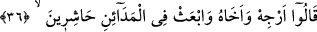
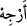
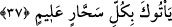

onu ilâhlık iddiâsından kulları ile istişâre makamına düşürdü. Halbuki daha önce görüş
ve idârede müstakil davranıyordu. Mûsâ (a.s.)’ın mülkünü zorla ele geçirmesinden
korktuğunu açıkça söyledi. Fir’avn’un çıkarılmayı ve yurdu; çevresindeki ileri gelenlere
nisbet etmesi, onları Mûsâ (a.s.)’dan uzaklaştırmak içindir.
36. Dediler ki: “Onu ve kardeşini eğle ve şehirlere toplayıcı görevliler gönder;
İleri gelenler “dediler ki: “Onu ve kardeşini eğle” Mûsâ ve kardeşi Hârûn’un işini
geri bırak ki bakalım, düşünelim. Yalanları ortaya çıkmadan önce onları öldürmekte
acele davranma ki kulların senin hakkında kötü düşünmesinler. Böylece onları
öldürmekte mâzur olursun.
el-Kâmûs’ta geçtiği üzere işi vaktinden sonraya ertele anlamında “__WORD__ denir.
“Ve şehirlere” idâren altındaki şehirlere, beldelere ve bölgelere, memleketin
şehirlerine “toplayıcı” insanları toplayıp bir araya getiren “görevliler gönder;”
Fethu’r-Rahmân’da der ki: “Bu şehirler, Mısır’ın bölgelerinden Saîd’in şehir ve
beldeleridir.
37. Ne kadar bilgisi derin sihirbaz varsa sana getirsinler.”
Toplayıcı görevliler “Ne kadar bilgisi derin” nerede mâhir, bilgili ve seçkin
“sihirbaz varsa sana getirsinler.” Sihrinin benzeri ile Mûsâ’ya karşı koysunlar, hatta
ona galib gelsinler. Böylece herkese onun yalancılığı âşikar olsun. O zaman sen de onu
öldürürsün.
İşte bu, apaçık olan hakkı ortadan kaldırmak için nefsin bir düzeni ve şeytanın
vesvesesidir. Her asırda kurulan düzen böyledir. O düzenin sâhibi mutlaka
planını/düzenini kurar. Söz ve fiilin kötülüğü, ancak nefsin kötülüğünden kaynaklanır.
Çünkü her kap içindekini sızdırır. Eğer Fir’avn ve kavmi, Mûsâ (a.s.) hakkında düzen
kurmayı terk etseler ve onu kabul ile karşılasalardı her âfetten kurtulurlardı. Ancak
mevki ve makam hırsı onların uyanmasına mâni oldu. Bir şeyi sevmen, seni kör ve sağır
yapar. Onlar îman, itâat ve ittibâ ile hâsıl olan ebedî devletten gaflete düşüp yere
saplandılar.
Mesnevî’de der ki:
Taht dediğin ancak bir mengenedir.